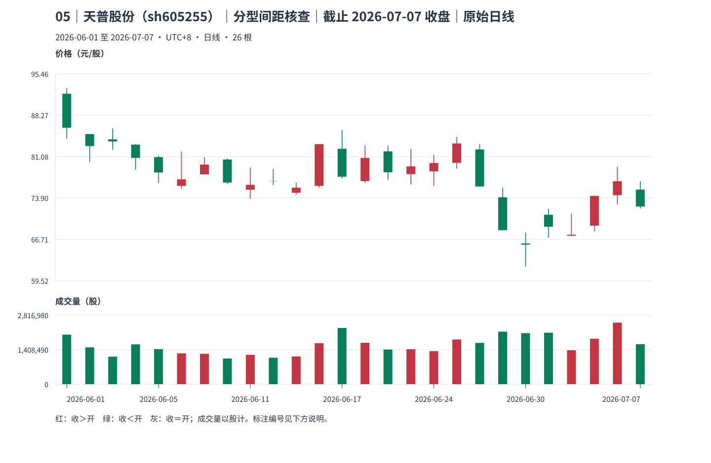
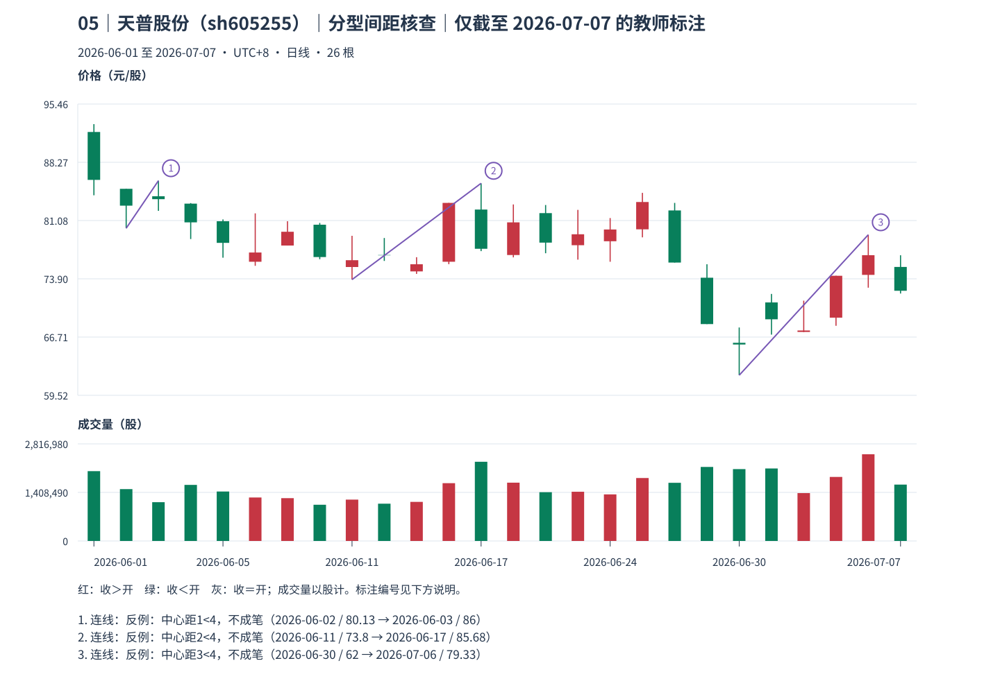
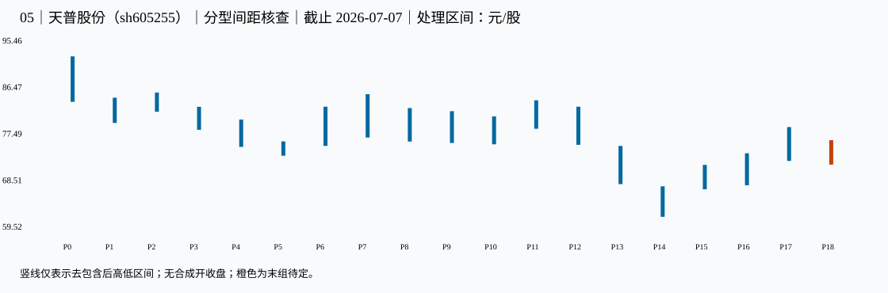

05｜天普股份（sh605255）｜分型间距核查｜本包讲解
教师讲解仅截止 2026-07-07；先保留同编号原答，逐小段核对、确认理解后再继续。
真实未复权日线；价格单位元/股（CNY/share），成交量单位股（shares），横轴按实际交易日顺序。窗口避开已知价格基准变化，其他公司行为及现金分红日历仍未穷尽核准；价格差不单独证明技术破位、经济损失或投资总回报。样本按教学需要事后选取，不用于估计模式频率。
声明起点 2026-06-01，首对 raw 0=[84.200,92.980]、raw 1（2026-06-02）=[80.130,85.000]，互不包含，高低共同向下。只按本窗口启动，未补造更早热身资料，也未绑定此前已确认段；左边界限制仍保留，首个笔端点不能自动作为真实段起点。
这一例实际算出了什么
所选两端为 底 P14，2026-06-30 的 62 元/股 → 顶 P17，2026-07-06 的 79.33 元/股；三组分别占 [13, 14, 15] 与 [16, 17, 18]。处理中心距 17−14=3，两组三组之间独立 P 号为 []，共 0 组。
中心至中心真实处理范围为 [62,79.33] 元/股；两端局部分型 formed_at 分别为 2026-07-01、2026-07-07，known_at 分别为 2026-07-03、未可知，仍待独立后组。极值发生日不能替代这两项证据时刻。
这两组三组虽不共用，却首尾相接，没有额外独立 P 组。覆盖这两分型的原始 K 线共有 7 根，仍不能补足处理中心距≥4；拒绝原因 spacing。因此没有这条指定严格笔的 known_at，不能把局部分型知道的日期当成成笔日期。
known_at 是本窗口、给定口径下边界证据齐备之日，空值表示尚待；confirmed_at_cutoff＝本截止内分型满足；provisional_right_group＝右组尚可吸收；provisional_fractal＝笔端点仍待；latest_endpoint_revisable＝末端仍可修订；accepted_at_cutoff＝本次接受。所有状态均非永久确认。
对照原图、标注和处理区间



展开本截止的逐根映射、分型、笔、拒绝与修订证据
1 原始 K 线 → 处理区间
| 原始号 | 日期 | 开 | 高 | 低 | 收 | 映射到 |
|---|---|---|---|---|---|---|
| 0 | 2026-06-01 | 92.010 | 92.980 | 84.200 | 86.100 | P0 |
| 1 | 2026-06-02 | 85.000 | 85.000 | 80.130 | 82.920 | P1 |
| 2 | 2026-06-03 | 84.080 | 86.000 | 82.280 | 83.720 | P2 |
| 3 | 2026-06-04 | 83.170 | 83.240 | 78.800 | 80.860 | P3 |
| 4 | 2026-06-05 | 81.000 | 81.220 | 76.500 | 78.330 | P4 |
| 5 | 2026-06-08 | 76.000 | 81.970 | 75.500 | 77.140 | P4 |
| 6 | 2026-06-09 | 78.000 | 81.000 | 78.000 | 79.700 | P4 |
| 7 | 2026-06-10 | 80.570 | 80.790 | 76.310 | 76.580 | P4 |
| 8 | 2026-06-11 | 75.350 | 79.200 | 73.800 | 76.190 | P5 |
| 9 | 2026-06-12 | 76.830 | 78.930 | 76.100 | 76.790 | P5 |
| 10 | 2026-06-15 | 74.810 | 76.560 | 74.500 | 75.690 | P5 |
| 11 | 2026-06-16 | 76.000 | 83.260 | 75.700 | 83.260 | P6 |
| 12 | 2026-06-17 | 82.440 | 85.680 | 77.310 | 77.600 | P7 |
| 13 | 2026-06-18 | 76.830 | 83.070 | 76.540 | 80.860 | P8 |
| 14 | 2026-06-22 | 82.000 | 83.000 | 77.050 | 78.360 | P8 |
| 15 | 2026-06-23 | 78.040 | 82.400 | 76.260 | 79.390 | P9 |
| 16 | 2026-06-24 | 78.530 | 81.390 | 76.000 | 79.980 | P10 |
| 17 | 2026-06-25 | 80.000 | 84.500 | 79.010 | 83.370 | P11 |
| 18 | 2026-06-26 | 82.330 | 83.260 | 75.900 | 75.900 | P12 |
| 19 | 2026-06-29 | 74.030 | 75.690 | 68.310 | 68.310 | P13 |
| 20 | 2026-06-30 | 66.000 | 67.890 | 62.000 | 65.790 | P14 |
| 21 | 2026-07-01 | 70.980 | 72.030 | 67.010 | 68.900 | P15 |
| 22 | 2026-07-02 | 67.340 | 71.200 | 67.320 | 67.520 | P15 |
| 23 | 2026-07-03 | 69.100 | 74.270 | 68.100 | 74.270 | P16 |
| 24 | 2026-07-06 | 74.380 | 79.330 | 72.800 | 76.810 | P17 |
| 25 | 2026-07-07 | 75.360 | 76.800 | 72.080 | 72.420 | P18 |
| 处理号 | 原始号 | 日期范围 | [低,高] | 低点实际日 | 高点实际日 | 合并方向 | 形成/末次修改 | 右边界已知日 |
|---|---|---|---|---|---|---|---|---|
| P0 | [0] | 2026-06-01—2026-06-01 | [84.2,92.98] | 2026-06-01 | 2026-06-01 | 无合并 | 2026-06-01 | 2026-06-02 |
| P1 | [1] | 2026-06-02—2026-06-02 | [80.13,85] | 2026-06-02 | 2026-06-02 | 无合并 | 2026-06-02 | 2026-06-03 |
| P2 | [2] | 2026-06-03—2026-06-03 | [82.28,86] | 2026-06-03 | 2026-06-03 | 无合并 | 2026-06-03 | 2026-06-04 |
| P3 | [3] | 2026-06-04—2026-06-04 | [78.8,83.24] | 2026-06-04 | 2026-06-04 | 无合并 | 2026-06-04 | 2026-06-05 |
| P4 | [4, 5, 6, 7] | 2026-06-05—2026-06-10 | [75.5,80.79] | 2026-06-08 | 2026-06-10 | down | 2026-06-10 | 2026-06-11 |
| P5 | [8, 9, 10] | 2026-06-11—2026-06-15 | [73.8,76.56] | 2026-06-11 | 2026-06-15 | down | 2026-06-15 | 2026-06-16 |
| P6 | [11] | 2026-06-16—2026-06-16 | [75.7,83.26] | 2026-06-16 | 2026-06-16 | 无合并 | 2026-06-16 | 2026-06-17 |
| P7 | [12] | 2026-06-17—2026-06-17 | [77.31,85.68] | 2026-06-17 | 2026-06-17 | 无合并 | 2026-06-17 | 2026-06-18 |
| P8 | [13, 14] | 2026-06-18—2026-06-22 | [76.54,83] | 2026-06-18 | 2026-06-22 | down | 2026-06-22 | 2026-06-23 |
| P9 | [15] | 2026-06-23—2026-06-23 | [76.26,82.4] | 2026-06-23 | 2026-06-23 | 无合并 | 2026-06-23 | 2026-06-24 |
| P10 | [16] | 2026-06-24—2026-06-24 | [76,81.39] | 2026-06-24 | 2026-06-24 | 无合并 | 2026-06-24 | 2026-06-25 |
| P11 | [17] | 2026-06-25—2026-06-25 | [79.01,84.5] | 2026-06-25 | 2026-06-25 | 无合并 | 2026-06-25 | 2026-06-26 |
| P12 | [18] | 2026-06-26—2026-06-26 | [75.9,83.26] | 2026-06-26 | 2026-06-26 | 无合并 | 2026-06-26 | 2026-06-29 |
| P13 | [19] | 2026-06-29—2026-06-29 | [68.31,75.69] | 2026-06-29 | 2026-06-29 | 无合并 | 2026-06-29 | 2026-06-30 |
| P14 | [20] | 2026-06-30—2026-06-30 | [62,67.89] | 2026-06-30 | 2026-06-30 | 无合并 | 2026-06-30 | 2026-07-01 |
| P15 | [21, 22] | 2026-07-01—2026-07-02 | [67.32,72.03] | 2026-07-02 | 2026-07-01 | up | 2026-07-02 | 2026-07-03 |
| P16 | [23] | 2026-07-03—2026-07-03 | [68.1,74.27] | 2026-07-03 | 2026-07-03 | 无合并 | 2026-07-03 | 2026-07-06 |
| P17 | [24] | 2026-07-06—2026-07-06 | [72.8,79.33] | 2026-07-06 | 2026-07-06 | 无合并 | 2026-07-06 | 2026-07-07 |
| P18 | [25] | 2026-07-07—2026-07-07 | [72.08,76.8] | 2026-07-07 | 2026-07-07 | 无合并 | 2026-07-07 | 末组仍可吸收 |
2 分型：发生与知道分列
| 顶/底 | 中心/三组 | 极值日/价 | 三组最早形成日 | 右组末次吸收 | 边界已知日 | 截止状态 |
|---|---|---|---|---|---|---|
| bottom | P1: [0, 1, 2] | 2026-06-02: 80.13 | 2026-06-03 | 2026-06-03 | 2026-06-04 | confirmed_at_cutoff |
| top | P2: [1, 2, 3] | 2026-06-03: 86 | 2026-06-04 | 2026-06-04 | 2026-06-05 | confirmed_at_cutoff |
| bottom | P5: [4, 5, 6] | 2026-06-11: 73.8 | 2026-06-16 | 2026-06-16 | 2026-06-17 | confirmed_at_cutoff |
| top | P7: [6, 7, 8] | 2026-06-17: 85.68 | 2026-06-18 | 2026-06-22 | 2026-06-23 | confirmed_at_cutoff |
| bottom | P10: [9, 10, 11] | 2026-06-24: 76 | 2026-06-25 | 2026-06-25 | 2026-06-26 | confirmed_at_cutoff |
| top | P11: [10, 11, 12] | 2026-06-25: 84.5 | 2026-06-26 | 2026-06-26 | 2026-06-29 | confirmed_at_cutoff |
| bottom | P14: [13, 14, 15] | 2026-06-30: 62 | 2026-07-01 | 2026-07-02 | 2026-07-03 | confirmed_at_cutoff |
| top | P17: [16, 17, 18] | 2026-07-06: 79.33 | 2026-07-07 | 2026-07-07 | 尚无独立后组 | provisional_right_group |
3 严格笔与拒绝项
| 笔号/方向 | 起点日/价 | 终点日/价 | 处理中心间距 | 全范围 | 分型证据齐备日 | 状态 |
|---|
| 起点 | 候选终点 | 中心距 | 拒绝原因 |
|---|---|---|---|
| 2026-06-02 | 2026-06-03 | 1 | spacing |
| 2026-06-11 | 2026-06-17 | 2 | spacing |
| 2026-06-11 | 2026-06-24 | 5 | same_kind_not_extreme |
| 2026-06-11 | 2026-06-25 | 6 | range_coverage |
| 2026-06-30 | 2026-07-06 | 3 | spacing |
4 同类极值更新记录
| 旧端点 | 新端点 | 修订首次观察日 | 新端点分型确认日 | 原因 |
|---|---|---|---|---|
| 2026-06-02: 80.13 | 2026-06-11: 73.8 | 2026-06-16 | 2026-06-17 | same_kind_more_extreme |
| 2026-06-11: 73.8 | 2026-06-30: 62 | 2026-07-01 | 2026-07-03 | same_kind_more_extreme |
仅本包计算证据 JSON；M11；M12。本图不产生已完成线段、中枢或收益证明。
本包核对完毕后，进入下一份原图；仍须先保存下一包自己的回答。